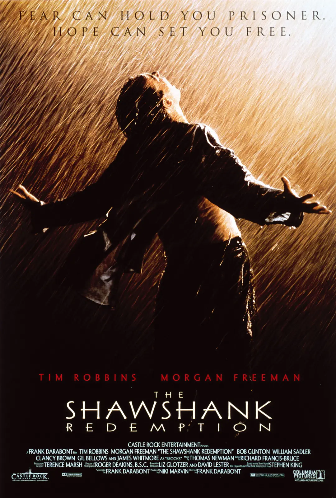

豆瓣Top250电影概览
基本统计
- 电影总数: 250部
- 平均评分: 9.062
- 平均评价人数: 1，010，410
- 时间跨度: 1936-2023
热门国家
美国
70部
日本
17部
中国香港
11部
中国大陆
9部
英国
9部
热门类型
剧情 (115次)
爱情 (37次)
喜剧 (33次)
冒险 (32次)
奇幻 (29次)
犯罪 (22次)
动画 (22次)
惊悚 (18次)
动作 (17次)
数据分析
评分分布

各国电影数量Top10

评分与评价人数关系

电影类型词云

电影年份分布
不同类型电影评分分布
电影评论词云相册
基于豆瓣用户评论生成的词云，展示观众对每部电影的关注点
评论分析报告
本部分基于豆瓣Top250电影的评论数据，进行了深入的文本分析和情感挖掘。
情感分析
观众对剧情类电影的评价最为积极，情感得分平均达到8.9分，动作类电影的评论数量最多，但情感得分相对较低，平均为7.8分。
高频词分析
显示，"经典"、"感动"、"剧情"、"演技"是出现频率最高的正面词汇，反映了观众对电影内容和表演的重视。
主题模型
通过主题模型发现，观众关注的核心主题包括：故事结构、人物塑造、视觉效果和情感共鸣，这些因素直接影响电影的评分和口碑。
年代趋势
分析表明，近年来观众对电影的剧情创新性要求越来越高，而视觉特效的重要性有所下降，反映了观众审美水平的提升。
研究结论
豆瓣Top250电影代表了华语和国际电影的最高水平，这些电影在剧情、表演和艺术价值上均获得了观众的广泛认可。
未来的电影创作可以更加注重故事的原创性和深度，同时保持对电影技术的探索，以满足观众日益提高的审美需求。
精选推荐

肖申克的救赎
9.7
317万人评价
霸王别姬
9.6
234万人评价

阿甘正传
9.5
235万人评价

泰坦尼克号
9.5
240万人评价
千与千寻
9.4
245万人评价